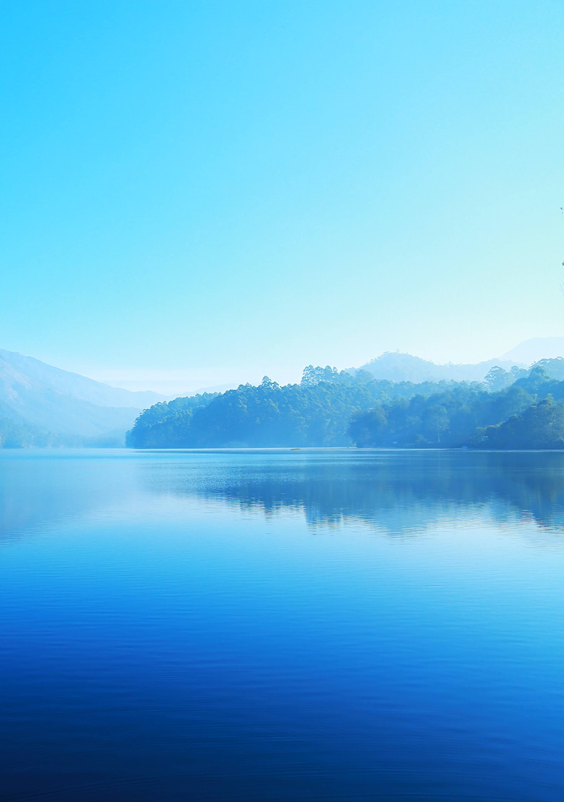
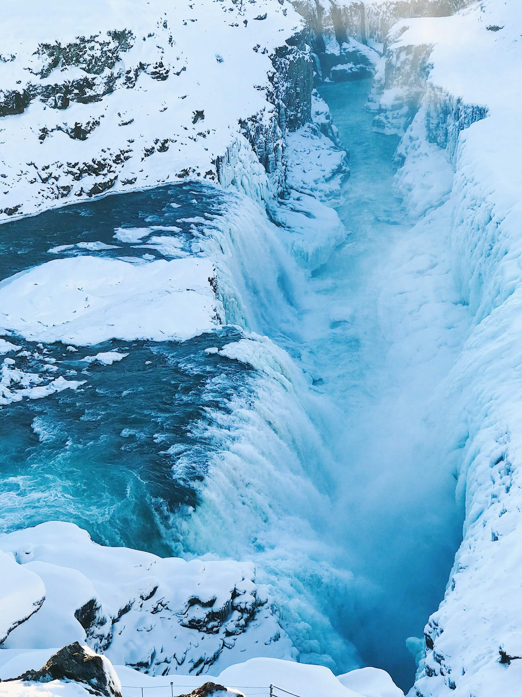
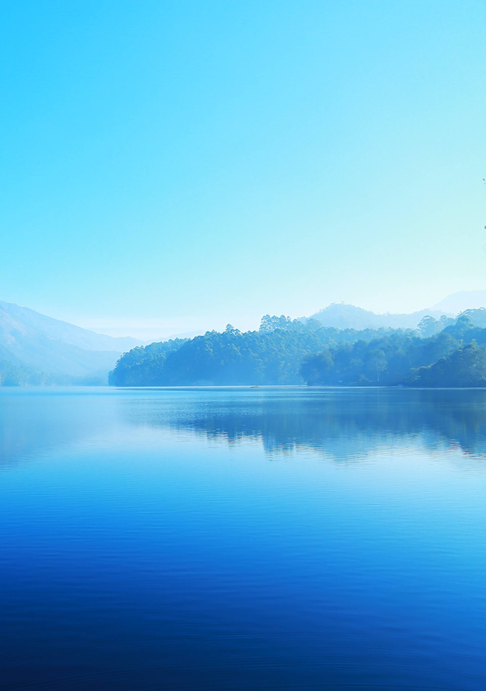
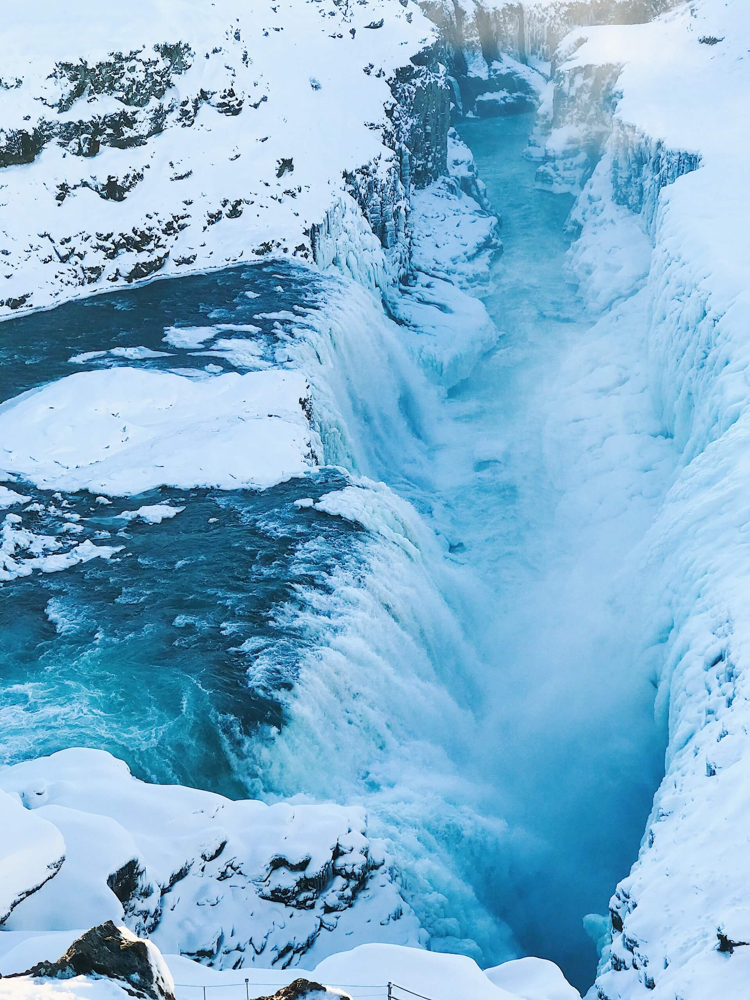
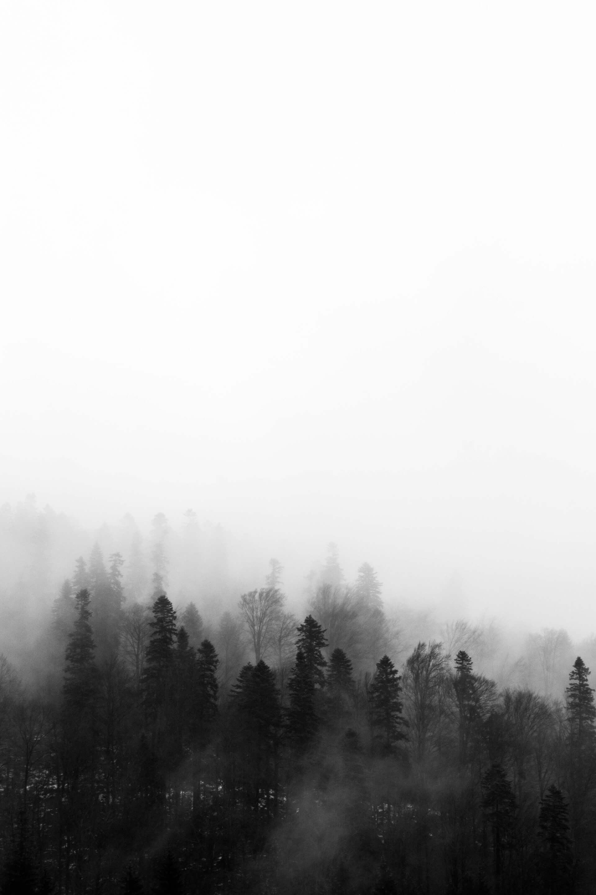
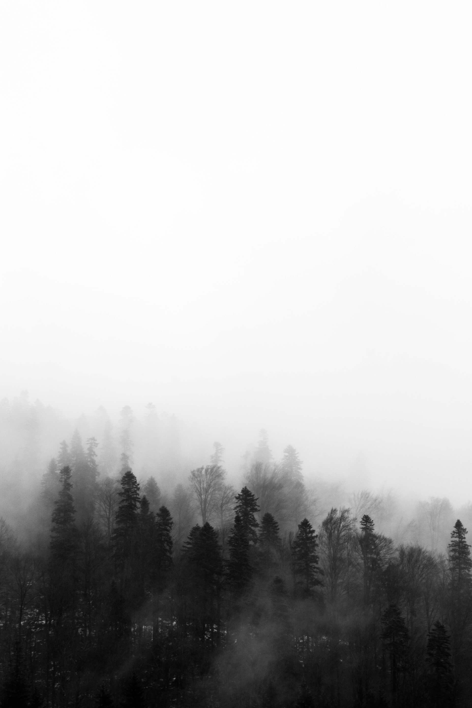

HISTORY AND ORIGIN
"If a drop of water could explain its history to us, it would explain the universe."


For thousands of years, nature creates the water of the Oasis. It patiently hides it in the deep layers of the earth, which enrich it with all essential minerals. Hidden in the depths of solid sedimentary and quartz rocks on the slopes of the Gledić mountains in the heart of Šumadija, it wisely collects all the minerals that our body needs for better health and a better quality of life. This unique SUBARTE water was discovered in 2001, and based on research and monitoring of the immutability of water parameters, it was scientifically established that it is water of GLACIER ORIGIN, very old and from a depth of over 1,500 meters. The origin, the very quality of Oaza water and the method of exploitation makes it unique in our region, so it is rightfully classified as one of the highest quality waters in the world, which is directly bottled from the depths of nature, without any processing.

OUR WATER
Universal ELIXIR of health, of life and youth! At a depth of over 60m, in the geographical heart of Serbia. Unspoiled nature has given all the exceptional properties to the water of the Oaza. The source, discovered more than two decades ago, provides water of the highest quality, thanks to many years of natural filtration through layers of granite and limestone from the slopes of the Gledić mountains. Clean water is certainly the most important prerequisite for a healthy, high-quality and long life. Of the small % of the world's drinking water, only 0.26% of that amount is available for use without any processing, and it belongs to EXTREMELY DRINKING WATER. This small % also includes Oaza water. This water belongs to the group of Glacier waters, which circulate through the earth's crust like river vessels, are filtered naturally, passing through different layers of the earth (rocks, limestone) and as such create a natural mineral balance. It is this ratio of essential minerals that promotes a healthy lifestyle and the natural purity of perfect mineral water.
WHY OAZA AQUA?
How to choose the right water for you?
NOT ALL WATERS ARE CREATED EQUAL. Thanks to the depth of its source, and the mineral composition of the layers of earth through which it passes, Oaza has a special purity, pristine composition and distinctive, silky taste. The composition that is important for our health is written on the declaration of bottled water. However, not all bottled water is the same.
Why?
Low-mineral waters do not burden the body, are quickly absorbed, help faster hydration and stimulate metabolism in the body. The most important thing in the composition of water is that all elements and minerals work synergistically.

 



 


WHY OAZA AQUA?
NOT ALL WATERS ARE CREATED EQUAL. Thanks to the depth of its source, and the mineral composition of the layers of earth through which it passes, Oaza has a special purity, pristine composition and distinctive, silky taste.
BENEFITS
Oaza water is bottled without any physical or chemical treatment. As a perfect product of nature, it preserves its exceptional composition after natural filtering and packaging, without contact with the outside world. Its first contact with the atmosphere is when the filled packaging is opened. The composition of water is ideal for achieving a balance of minerals in the body. It creates a natural balance in the body and has a beneficial effect on health.
IMPACT ON BODY
People who have a developed awareness of a healthy lifestyle take strict care of what kind of water they drink, especially what kind of water their children drink. Based on the opinion of sports doctors, due to the rapid absorption of water in the body, it is especially recommended for athletes and people who are exposed to heavy physical efforts. One of the advantages of this water is the low concentration of sodium, which is of crucial importance for people suffering from high blood pressure and as a prevention of cardiovascular diseases.
PROPERTIES
Oaza water is high-quality drinking water, with excellent organoleptic, physical-chemical and biological characteristics. Thanks to the ideal ratio of calcium and magnesium, as well as sulfates with a low value of potassium and sodium, the water has an ideally balanced ratio of minerals, which is excellent for the proper development of bones in children, and in adults it favors the proper functioning of the heart, reduces the risk of myocardial infarction and replaces calcium that is lost due to old age, smoking and other unhealthy habits. Magnesium regulates the work of the intestines, especially in case of constipation. In pregnant women, it reduces the risk of spontaneous abortion and premature birth.
WATER AND LIFE
On its thousands of years long underground journey, Oaza passed through a series of geological deposits, which are millions of years old, and acquired an exceptional, crystalline clarity and a unique mineral composition. The body consists of water It makes up more than 60% of your body. It is necessary for life. It activates and improves body functions. Hydrates and cleans, inside and out. Water contributes to the balance of mind and body.
EXTERNAL FACTORS
The depth of the source protects the water from exposure to external factors, negative and even human influences. We mention this, led by the "Corona" pandemic and doubting the benevolence of the human mind.
Water is the source of life and vitality.
It is necessary for key physiological processes
Water moves us and ensures the normal development of all processes in our body. With its appropriate intake, you will contribute to achieving a balance of mind and body. Your body is made of water. It makes up about 60% of an adult's body, and even 70% of a child's, and is an integral part of every cell. It participates in biochemical reactions, transport of matter through the vascular system, regulates digestion, supports joints and protects tissue and organs. Water maintains your body temperature.
That is why it is very important that you take in a sufficient amount of water every day. It is the most important part of the diet, especially in detox diets. With proper hydration, your skin becomes more beautiful, elastic and firm.
Recommendations for water intake
The required amount of water depends on other factors besides age and sex. Pregnancy and lactation in women, as well as extreme environmental temperatures and increased physical activity increase the body's need for water. According to the European Food Safety Agency, the appropriate total water intake for adults is 2L per day for women and 2.5L for men* Adequate hydration is necessary for the normal functioning of the body, and the natural mineral water of Oaz, with its unique mineral composition and impeccable, pristine purity, is a valuable gift of nature, and you can enjoy its exceptional quality every day.
MINERAL COMPOSITION OF WATER AND WHY IT IS IMPORTANT?
If there is magic it is contained in water.
Oaza water belongs to the sources where people had no influence when the water basin was created and represents a real treasure because it is an untouched part of nature that is being exploited. It is declared as natural mineral water and as such must not be treated with any chemical preparations before bottling, but can be only filled from the source to the bottle.
Oaza water can be bottled in pure, untouched nature, right at the source, so that none of its precious properties are lost. The waters from this area belong to waters of medium low mineralization, which means that they can be drunk daily in unlimited quantities.

HOW MUCH WATER SHOULD WE (REALLY) DRINK DAILY?
The amount of water you need to drink during the day depends on many different factors such as gender, age, climate, diet, physical activity, health status. The general recommendation is between 8 and 15 glasses of water per day without restrictions on consumption, i.e. low-mineral water. Thanks to its composition, Oaza water is one of those low-mineral waters that you can enjoy all day without restrictions, even during pregnancy. If you are training, it is necessary to make an optimal schedule of water consumption during the day. During training, you should drink 100-250 ml of water every 15-20 minutes, and after physical activity, 400-450 ml every hour, depending on its strength and length. During physical activity, the body loses water, so it is important to provide the body with enough hydration so that the training is effective for the whole organism.